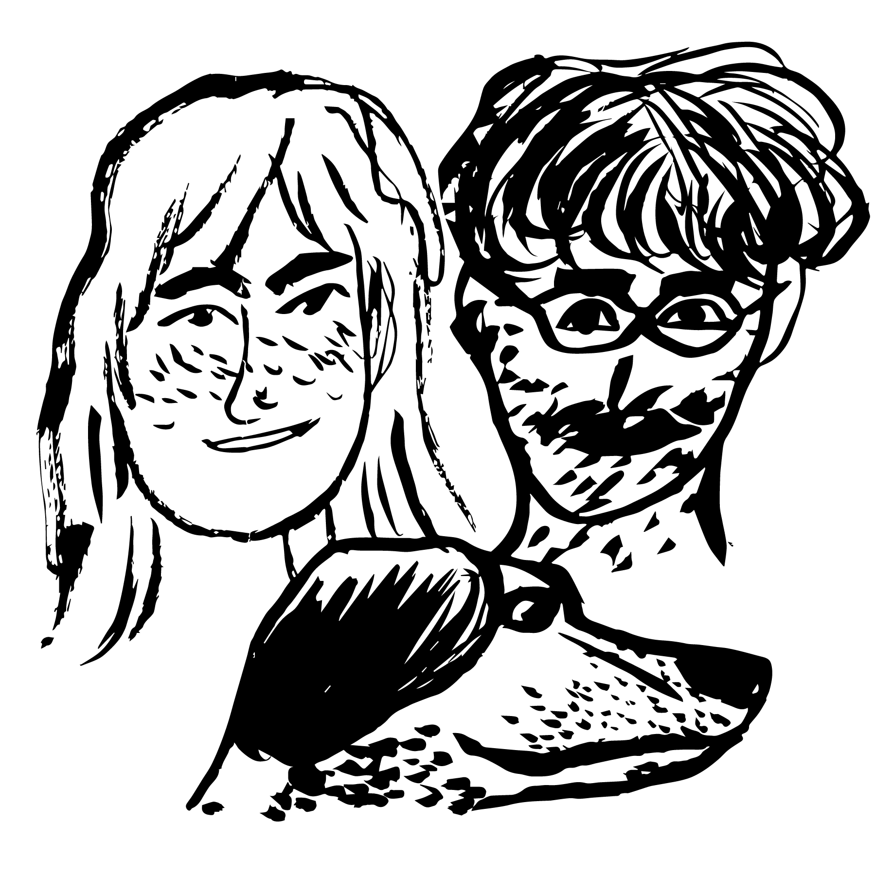

Hannah and Gil are getting married

Time and place:
Saturday, October 16, 2021, 6:00 pm
Joe's Garage, 443 Main St, Catskill, NY 12414
Getting there:
By plane: Albany International Airport is small, but the closest airport option to the area. The venue is a 2.5 hour drive from major NYC airports.
By train: Amtrak runs regular trains from Penn Station in Manhattan to Hudson. From the train station, it is a short walk into the town of Hudson, and a 10 minute taxi ride directly across the Hudson River to Catskill.
By car: The area is easily accessible by car. Uber/ Lyfts are available, but may be slow to arrive (we're rural!)
We suggest contacting these local taxi companies for rides:
Hudson Region Transport: (518) 547-7094
Warren Taxi: (518) 262-2613
Where to stay:
We recommend taking advantage of the plethora of Airbnb and VRBO rentals in Catskill, and surrounding towns such as Athens, Leeds and Hudson. We suggest that our guests book lodging in advance, as the Hudson Valley is a popular destination on fall weekends!
There are also many hotels in Catskill and the surrounding area. You can view a list here.
Attire:
Please wear whatever you'd like.